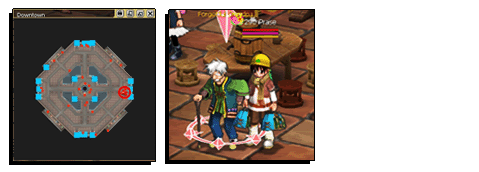
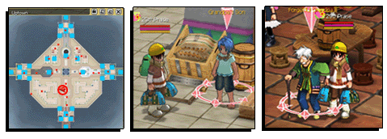
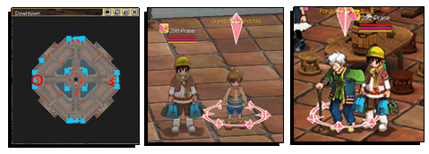
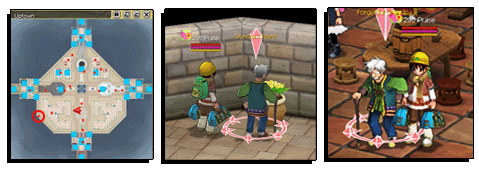
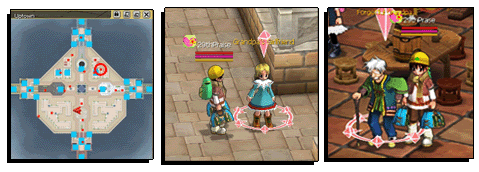

~* Welcome to Merchant Guide & Talks *~
ยินดีต้อนรับสู่กระทู้แนะนำการเล่นและพบปะพูดคุยครับผม
=============================================================
LINKS ไปยังข้อมูลของเพื่อน ๆ ช่วยหามาให้ครับ ^^
๏ LINK QUESTS ประจำอาชีพโดย KemoShota ครับผม ^^
=============================================================
สารบัญ
ถ้าหากอยากทราบข้อมูลส่วนไหนให้กด Ctrl + F นะครับ แล้วกรอกหัวข้อลงไปแล้วกด next นะครับผม ^^
- Introduction
- สายอาชีพ
- ข้อมูลพื้นฐานเกี่ยวกับเผ่าพันธ์
- Job Bonus
- ตารางสกิล
- รายละเอียดแต่ละสกิล
• สามารถตั้งร้านขายของเองได้ โดยไม่ต้องพึ่ง มาริโอเน็ต
• สามารถซื้อของจากร้านได้ในราคาถูกลง ด้วยสกิล DC
• สามารถขายของแก่ร้านได้ในราคาที่แพงขึ้น ด้วยสกิล OC
• สามารถบรรทุกสินค้า ได้มากกว่าอาชีพอื่น ๆ ด้วยสกิล Packing ที่เพิ่ม CAPA
• สามารถบรรจุสินค้าได้น้ำหนักมากกว่าอาชีพอื่น ๆ ด้วยสกิล Increase Weight
ความสามารถโดยแบ่งเป็นเผ่า
ค่าเริ่มต้น

แต่ที่นิยมคงจะเป็นเผ่า Emil มากกว่านะครับ ^^
Job Bonus


• How to Change Job
========== MERCHANT ==========
เงื่อนไข : ไม่มี
วิธีเปลี่ยน

1. ไปที่แม็พ "Uptown" การเข้า uptown ดูได้ที่ Re: ข้อมูลการเล่นเบื้องต้น(อ่านแล้วเชื่อว่าข้อสงสัยจะน้อยลงครับ) by Asamiya
2. เข้าตึกที่เปลี่ยนอาชีพตรงตำแหน่งที่วงกลมสีแดงดังรูปแล้วขึ้นไปรับเควสที่ชั้น 4 จาก Merchant Master ซึ่งอยูู่่ทางทิศเหนือของชั้น 4
3. หลังจากนั้น Merchant Master จะวานให้ช่วยส่งของดังนี้ (เควสอาจสุ่มสลับลำดับการส่งของนะครับ ให้ดูของที่ได้รับเป็นหลัก)
- 3.1 "Letter" นำไปส่งให้ Forgetful Grandpa แม็พ "Downtown"
ตรงตำแหน่งวงกลมสีแดงดังรูป
- 3.2 ให้ไปหา "Wallet" โดยรับมาจาก Grandpa's Son ที่แม็พ "Uptown"
ตรงตำแหน่งวงกลมสีแดงดังรูป แล้วกลับมาหา Forgetful Grandpa
- 3.3 ให้ไปหา "Handkerchief" โดยรับมาจาก Grandpa's Grandchild ที่แม็พ "Downtown"
ตรงตำแหน่งวงกลมสีแดงดังรูป แล้วกลับมาหา Forgetful Grandpa
- 3.4 ให้ไปหา "Stick" โดยรับมาจาก Friend of Grandpa's Friend ที่แม็พ "Uptown"
ตรงตำแหน่งวงกลมสีแดงดังรูป แล้วกลับมาหา Forgetful Grandpa
- 3.5 ให้ไปหา "Glasses" โดยรับมาจาก Grandpa's Henchman ที่แม็พ "Downtown"
ตรงตำแหน่งวงกลมสีแดงดังรูป แล้วกลับมาหา Forgetful Grandpa
- 3.6 ให้ไปหา "Underpants" โดยรับมาจาก Grandpa's Girlfriend ที่แม็พ "Uptown"
ตรงตำแหน่งวงกลมสีแดงดังรูป แล้วกลับมาหา Forgetful Grandpa
- 3.7 ให้ไปหา "Denture" โดยรับมาจาก Lachrymose Man ที่แม็พ "Downtown"
ตรงตำแหน่งวงกลมสีแดงดังรูป แล้วกลับมาหา Forgetful Grandpa
4. นำ "Letter" กับ "Certification" กลับไปให้ Merchant Master เป็นอันจบเควสครับ
• Skills
สัญลักษณ์และความหมายของการประเมินสกิลนะครับ
☆ สกิลที่จำเป็น / ◎ สกิลที่พิจารณาแล้วดี /○ สกิลที่สะดวก / △ ขึ้นอยู่กับสถานการณ์ / x ไม่น่าใช้ ( คิดว่านะครับ )
ประเภท : A ( Active Skill สกิลที่ต้องกดสกิลเวลาใช้ ) / P ( Passive Skill สกิลติดตัว )
หมายเหตุ : รอความถูกต้องจากเซิฟไทยอีกทีครับผม
ที่มา : http://ec.gamedb.info/wiki/Skill/Mercha ... l#oceb1007

รายละเอียดแต่ละสกิลครับ
ตัวเลขใน [ ] หมายถึง Job Lv นะครับ
 [1] เพิ่มความจุ
[1] เพิ่มความจุ ๐ Passive
๐ เป้าหมาย : ตัวเอง
๐ เพิ่มช่องไอเท็ม ^^
LV1 CAPA+10%
LV2 CAPA+20%
LV3 CAPA+30%
LV4 CAPA+40%
LV5 CAPA+50%
[ 2 ] เพิ่ม HP สูงสุด๐ Passive
๐ อุปกรณ์สวมใส่ : ไม่มี
๐ เพิ่ม HP สูงสุด

๐ ขึ้นอยู่กับ HP ของแต่ละอาชีพ และ ค่า VIT
๐ Secondary job เพิ่มขึ้นตามค่าที่ ดังนี้
VIT10：+10,+22,+45,+75,+114
VIT47：+12,+37,+75,+125,+188
[ 4 ] เพิ่ม SP สูงสุด ๐ Passive
๐ อุปกรณ์สวมใส่ : ไม่มี
๐ เพิ่ม SP สูงสุด
 [ 4 ] เพิ่มเปอร์เซนต์การฟื้นฟู HP
[ 4 ] เพิ่มเปอร์เซนต์การฟื้นฟู HP๐ Passive
๐ อุปกรณ์สวมใส่ : ไม่มี
๐ อัตราการฟื้นฟู HP เพิ่มขึ้น

 [ 7 ] ศิลปะแห่งผู้รอบรู้
[ 7 ] ศิลปะแห่งผู้รอบรู้๐ Active
๐ ใช้ Mp1 Sp 1
๐ เป็นสกิลใช้กับตัวเอง
๐ อุปกรณ์สวมใส่ : ไม่มี
๐ สามารถใช้ตรวจสอบไอเท็มได้โดยไม่ต้องมีไอเท็มตรวจสอบ
[9] Mace Mastery ๐ Equipment condition: Mace
๐ พลังโจมตีขั้นต่ำเพิ่มขึ้นเมื่อใส่อุปกรณ์ประเภทกระบอง
๐ ค่า ATK ต่ำสุด ที่ขึ้นอยู่กับ STR และเพิ่มอัตราความแม่นยำ
 [ 10 ] เพิ่มเปอร์เซนต์การฟื้นฟู SP
[ 10 ] เพิ่มเปอร์เซนต์การฟื้นฟู SP๐ Passive
๐ อุปกรณ์สวมใส่ : ไม่มี
๐ อัตราการฟื้นฟู SP เพิ่มขึ้น
๐ เมื่อนั่ง อัตราการฟื้นฟู SP พื้นฐาน + Lv*1

 [10] Blow
[10] Blow ๐ Active
๐ ใช้ SP 3 + skill *1
๐ เป้าหมาย : 1
๐ ระยะ : 1
๐ อุปกรณ์สวมใส่ : อาวุธทั่วไป
 [12] Discount
[12] Discount ๐ Passive
๐ อุปกรณ์สวมใส่ : ไม่มี
๐ ซื้อของจาก NPC ได้ในราคาถูกลง
๐ ใช้ได้กับ NPC อย่างเดียว
 [15] แคมป์
[15] แคมป์ ๐ Active
๐ ใช้ SP : 1
๐ เป้าหมายพื้นดิน
๐ ระยะ 1
๐ อุปกรณ์สวมใส่ : ไม่มี
๐ สกิลสร้าง camp
 [17] Overcharge
[17] Overcharge ๐ Passive
๐ อุปกรณ์สวมใส่ : ไม่มี
๐ ขายของได้แพงขึ้น ^^

 [ 20 ] open-air fire
[ 20 ] open-air fire ๐ Active
๐ ใช้ Sp : Lv*10
๐ ระยะ : 5
๐ เป้าหมาย : รอบ ๆ พื้นที่ดินที่จุดกองไฟ ><
๐ อุปกรณ์สวมใส่ : ไม่มี
๐ จุดกองไฟลงบนพื้นดิน
๐ รอบ ๆ กองไฟ HP จะเพิ่มขึ้นทีละน้อย
๐ ระยะสกิล 5*5

 [25] Support
[25] Support๐ Active
๐ ใช้ SP : 6+ ( Skill Lv * 2 )
๐ ระยะ : 5
๐ เป้าหมาย : 1
๐ เพิ่มพลังโจมตีทางกายภาพ

 [28] Banish Blow
[28] Banish Blow๐ Active
๐ SP : ดูจากตาราง ครับ
๐ เป้าหมาย : 1
๐ ระยะ : 1
๐ อุปกรณ์สวมใส่ : อาวุธโจมตีพื้นฐาน
๐ โจมตีคู่ต่อสู้ด้วยอาวุธมีผลทำให้ศัตรูกระเด็น

 [30] กำแพงเหล็ก
[30] กำแพงเหล็ก๐ Active
๐ Sp : ตามตาราง
๐ เป้าหมาย : ใช้กับตัวเอง
๐ ขณะใช้ไม่สามารถขยับไปไหนได้ หากขยับสกิลจะหยุดทันที
๐ เพิ่มพลังป้องกันอย่างสูง
๐ 1 วิ ใช้ 1SP
๐ จะยกเลิกเมื่อใช้สกิล หรือใช้ไอเท็ม
๐ ดูเหมือนว่า พลังป้องกันเวทย์จะไม่เพิ่ม
 [40] เพิ่มน้ำหนัก
[40] เพิ่มน้ำหนัก๐ Passive
๐ เพิ่มน้ำหนักบรรทุกมากขึ้น

 [45] Riot Hammer
[45] Riot Hammer๐ Active
๐ SP : 12+ (skill LV* 7)
๐ เป้าหมาย : ในระยะ 3*3 ช่อง
๐ นอกเหนือจากสมาชิกในปาร์ตี้ที่อยู่ในบริเวณวัตถุที่ถูกโจมตีจะไม่สามารถขยับได้
 [50] Silly Rose
[50] Silly Rose๐ Active
๐ SP : จากตาราง
๐ ระยะ : 1
๐ เป้าหมาย : 1
๐ เสียงที่เกิดขึ้นจะไปรวบกวนสมาธิของเป้าหมาย ทำให้เกิดการทำลายและลดพลังโจมตีเวทย์มนต์

• How to Play By neozone
neozone เขียน:ขอบคุณ neozone เป็นอย่างสูงครับ
การเก็บเวลช่วงๆแรกเก็บรอบๆบริเวณรอบๆเมืองหลักเลยครับ
จากนั้นจะไปต่อที่แหลม Istor ก็ได้ครับที่นั้นมีต้น Cotton อยู่เก็บเอาไปให้ farmer ทำ frabic ขายได้ราคาดีครับเพราะตรงนั้นจะมีร้านค้าไว้เก็บitem ส่งกลับเมืองหลักได้ครับ
พอlv 20-30 ให้ไปเกาะเรือรบไปตีหมีหาferหาskinมาขายได้ราคาดีครับ
Fer ถ้าเป็น oc เต็มขายได้ 300->432g ทำเป็น worst 360 -> 518g
แต่ถ้าใครอยากได้มากกว่านี้ก็เอาไปขายกับคนทางเข้าดันเหนือได้ครับจากเขาจะขายของราคา 150% ทำให้ขายก็ขึ้น 150% เช่นกันดังนั้น 360 -> 450 -> 648g ครับ ^^
ส่วน Skin เอาไปตั้งร้านขายได้ครับมีคนต้องการเอาไปทำเควสอยู่แล้ว ^^
จากนั้น31-50 ก็ไปอยู่แถวๆเมืองเหนือได้เลยครับจนเป็นtrader


• FAQ
๏ กระเป๋า หาได้จากที่ไหนบ้าง ?
• กระเป๋ามือขวา
Lv 1 ซื้อได้ที่ acropolis uptown -Merchant Guild ราคา 3500 / acropolis downtown - Merchant Guild ราคา 3500
Lv 15 ซื้อได้ที่ fareastcity - Merchant Guild - ราคา 6800
Lv 25 ซื้อได้ที่ fareastcity - Merchant Guild - ราคา 8900
• กระเป๋ามือซ้าย
Lv 1 ซื้อได้ที่ northencity - Merchant Guild - ราคา 1500
Lv 10 ซื้อได้ที่ northencity - Merchant Guild - ราคา 3000
Lv 15 ซื้อได้ที่ northencity - Merchant Guild - ราคา 6800
• กระเป๋าสะพายหลัง
Lv 8 ซื้อได้ที่ acropolis downtown - South Stall Merchant ราคา 8000
Lv 10 ซื้อได้ที่ acropolis downtown - Merchant Guild ราคา 11000 / fareastcity - Merchant Guild - ราคา 11000
Lv 15 (ตะกร้า) ต้องตัดเย็บเองครับ วิธีการดูในส่วน others
Lv 20 ต้องเย็บเองนะครับ วิธีการดูในส่วน others เหมือนกัน
KemoShota เขียน:ขอบคุณ KemoShota มา ณ ที่นี้ด้วยครับ ^^
๏ อาวุธของพ่อค้าซื้อได้ที่ไหน บ้าง?
เรื่องอาวุธของพ่อค้านี้ต้องทำใจครับ มีขายหลายที่เหลือเกิน เครื่องป้องกันก็ด้วย หาซื้อยากมากมาย ไหนๆก็ไหนๆผมขอบอกที่ขายอาวุธหน่อยละกัน เริ่มตั้งแต่อันแรกเลยนะครับ
- club (lv 0)(300) หาซื้อที่ได้ที่พ่อค้า guild ทั้ง 4 ทิศ
- spiked club (lv 5) อันนี้ไม่รู้อะครับ เพราะของผมเพื่อนซื้อมาให้ ใครรู้ช่วยบอกที
- barl (lv 11)(9,800) ร้านขายอาวุธ downtown
- mace (lv 15)(7,850) พ่อค้าอาวุธที่พรมแดนใต้ map sourin cape (ทางไป iron south อะครับ)
- morning star (lv 21)(16,000) ซื้อได้ที่เดียวกับ mace ครับ
- heavy mace (lv 24)(20,000) ซื้อได้ที่พ่อค้าคาราวาน map steap desert
- heavy hammer (lv 35)(30,000) ร้านอาวุธเมือง northan
- abacus of wood (lv 45)(43,000)
ที่บอกไปคือาวุธที่พ่อค้าใช้ได้นะครับบ
• Others
• วิธีการทำตระกร้า เลเวล 15 แบบละเอียด
การทำกระเป๋าสะพายหลังเลเวล 20 ขอบคุณ นารุคุง นะครับผม
นารุคุง เขียน:เป้ 20 ทำได้ครับ กับช่างตัดเย็บใน Uptown
แต่ของหายากพอตัว...
วัตถุดิบจำเป็นที่ควรติดตัวไว้ Needle , Knit Needle ,Scissor[ไม่แน่ใจ]
Water Proof Fabric x2 --> Greater Cloth + rowx4
Platinum Part x2 --> Platinum Nugget + Distrill Water[หลอมแร่ให้บริสุทธิ์]
Brown Strap x2 ---> Baw Skin Piece
Greater Cloth x2 ---> Great Thread + Great Clothx2
*** Great Cloth --> Thread + Fabric x2
*** Fabric ---> Cotton [Purify เอา...]
• เควสกระเป๋า 35 ครับ โดยDonlanai
• Links
Under Construction
Kutiman Talks เขียน:อยู่ในช่วง กำลังพัฒนาให้ดียิ่งขึ้นครับ ^^ ตอนนี้กำลัง มั่วได้ใจมากเลยครับ ข้อมูลเลย ไม่แน่น ไม่ชัวร์ ส่วนใหญ่จะแปลมาน่ะครับ
ใครมีข้อแนะนำก็โพสต์ไว้เลยนะครับผม หรือถ้าซิบในเกมก็ 29thPraise เซิฟ ทาโกะ นะครับผม
แหล่งอ้างอิง ครับ ^^
• http://ec.gamedb.info/wiki/Skill/Mercha ... ontent_1_0
Special Thanks
• ขอบคุณ Elzus สำหรับ แปลภาษาคะตะคะนะ และก็ฮิรางานะ นะครับ ^^
• ขอบคุณ สำหรับข้อมูลทีเพิ่มเติมนะครับ มีโอกาสจะเพิ่มให้ครับ
• ขอบคุณ neozone สำหรับข้อมูลดี ๆ ครับ ^^
• ปล. ขอบคุณทุกกำลังขุด แล้วก็ทุกกำลังใจครับ
• ผมอ่านทุกหน้าแล้วนะครับ ข้อมูลไหนดี ๆ ขอมาแปะไว้นะครับผม
อย่างน้อยเข้ามาโพสต์เข้ามาขุดก็ดีนะครับ ^^
ประวัติการแก้ไข
Date เขียน:• 8 / 04 / 07 แก้ไขชื่อสกิลให้ตรงกับเว็ปหลักแล้วนะครับ
• 9 / 04 / 07 ปรับปรุงรูปแบบให้ดูง่ายขึ้นครับ แก้ไขข้อมูลบางส่วน
• 11 / 04 / 07 เพิ่มสถานที่เก็บเลเวล เพิ่มการอัพสเตตัส เพิ่มการเปลี่ยนอาชีพ โดยคุณ neozone นำข้อมูลมาให้นะครับ
• 11 / 07 / 07 อัพเดท สถานที่ขายกระเป๋า
• 13/ 07 / 07 อัพเดท อาวุธที่พ่อค้าใช้ได้ การทำตะกร้า และกระเป๋าเลเวล 20 รวมถึงการปรับปรุงเนื้อหาภายในกระทู้ ตัดส่วนที่ไม่จำเป็นออก กล่าวคือ เอาเนื้อหาล้วน ๆ ^^
• 14 / 07 / 07 เปลี่ยนวิธีการเปลี่ยนอาชีพแบบยกชุดเลยครับ
• 15 / 07 / 07 เพิ่มเติมการทำตระกร้า แบบละเอียดที่หน้า 24 ครับ